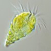

oligotricha

Definition: The oligotrichs are a group of ciliates, included among the spirotrichs. They have prominent oral cilia, which are arranged as a collar and lapel, in contrast to the choreotrichs where they form a complete circle. The body cilia are reduced to a girdle and ventral cilia. In Halteria and its relatives, they form bristles or cirri; however these forms may be closer relatives of the stichotrichs than of other oligotrichs. These organisms are very common in plankton communities, especially in marine systems. Usually found in concentrations of about 1 per ml, they are the most important herbivores in the sea, the first link in the food chain.
Source: Wikipedia
Wikipedia Page (Something wrong with this association? Let us know.)
Wikidata Page (Something wrong with this association? Let us know.)